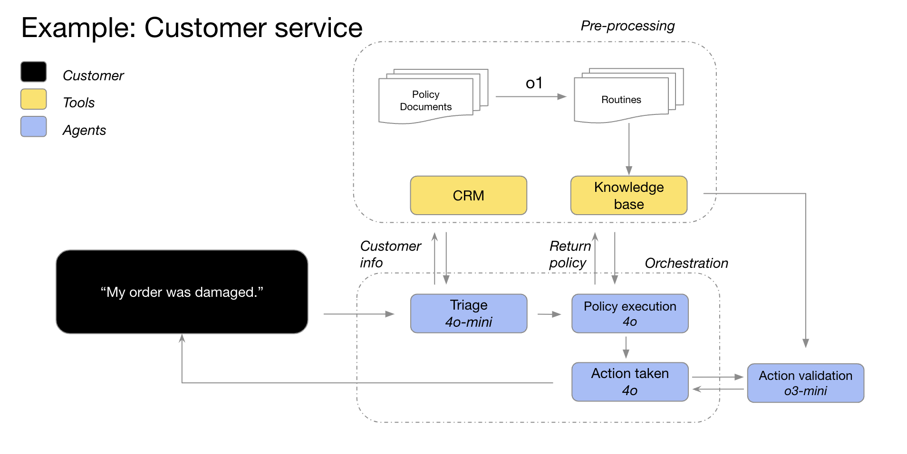
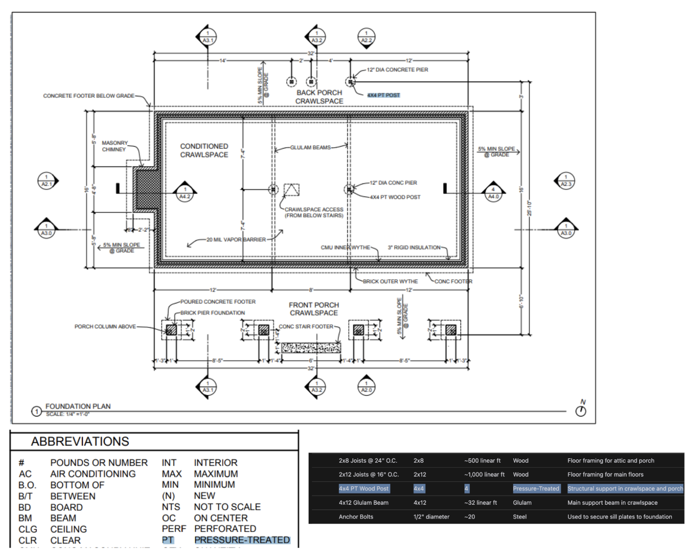

推理模型使用最佳实践
了解何时使用推理模型，以及它们与 GPT 模型有何不同。
OpenAI 目前提供两大类模型：
推理模型（例如 o1 和 o3-mini）
GPT 模型（例如 GPT-4o）
这两种模型家族在使用和效果上都有所不同。本文将介绍：
OpenAI 的推理模型与 GPT 模型之间的区别
何时使用推理模型
如何有效地给推理模型“提示”（prompt）
推理模型 vs. GPT 模型
与 GPT 模型相比，OpenAI 的 o 系列模型（推理模型）在不同类型的任务上更出色，需要使用不同的提示方式。并非哪一种模型一定“更好”，而是各有擅长的领域。
o 系列模型（“策划者”）
专门训练来深入思考复杂任务，擅长制定策略、规划多步骤的复杂问题、以及在大量含糊不清的信息中进行决策。它们也能高准确度地执行任务，特别适用于需要专业水准的领域，比如数学、科学、工程、金融服务以及法律服务。GPT 模型（“主力干活者”）
延迟更低、成本更低，主要用来执行简单直接的任务。如果你的应用需要在解决问题时先由 o 系列模型进行战略规划，然后再让 GPT 模型执行具体子任务，那么当速度和成本更重要时，GPT 模型会更划算。
如何选择
你可以根据需求，思考下列问题：
速度和成本是否最重要？
如果是，则 GPT 模型更快且通常更省钱任务是否明确、边界清晰？
如果是，GPT 模型在执行明确规定的任务时效果很好准确度和可靠性是否优先？
如果是，o 系列模型在做决策时更可靠是否需要解决复杂的多步骤问题？
如果是，o 系列模型擅长处理复杂或模糊的场景
如果你的任务优先考虑速度与成本，并且任务本身相对明确、好定义，那么使用 GPT 模型就非常合适。
但如果你更注重准确度和可靠性，而且问题本身很复杂、有多个步骤，那么O pen AI建议选择 o 系列模型。
大多数情况下，你也可以把这两种模型结合起来使用：用 o 系列模型进行“智能规划和决策”，再让 GPT 模型去执行具体步骤。

示例：GPT-4o 和 GPT-4o mini 先处理订单信息与客户资料，找出订单问题和退货政策，然后将这些信息提供给 o3-mini，由它根据政策最终决定退货是否可行。
何时使用推理模型
下面列出了一些实际场景，这些案例来自 OpenAI 的客户和 OpenAI 内部，希望能帮助大家更好地理解 o 系列模型（推理模型）适合用在哪些地方。不过，这并不是一个覆盖所有可能用例的完整清单，而是给出一些在测试中行之有效的思路。
1. 处理模糊或不完整的信息
推理模型特别擅长接收零散、有限的信息，然后根据简单提示去理解用户意图，并处理那些不够明确的指令。它们经常会先问一些澄清性的问题，而不是盲目猜测或随意填补空白。
“o1 的推理能力让 OpenAI 的多智能体平台 Matrix 在处理复杂文档时，能给出详尽且格式良好的回复。举个例子，o1 让 Matrix 可以轻松找出信用协议（Credit Agreement）中受限支付能力（restricted payments capacity）下可以使用的各种‘篮子’（baskets），而只需要一个简单提示。过去没有任何模型能这么出色。相比于其他模型，在对密集的信用协议进行复杂提问时，o1 在 52% 的问题上有更好的表现。”
——Hebbia，为法律和金融提供 AI 知识平台
2. 海量信息中找出关键点
当你需要处理大量无结构信息时，推理模型能很有效地提炼出最相关的部分来回答问题。
“在分析某公司收购案时，o1 审阅了几十份公司文件，比如合同、租约等，去寻找可能影响交易的关键条件。它需要标记重要条款时，甚至在文件脚注中看到了一个非常关键的‘变更控制’（change of control）条款：如果公司被出售，那需要立刻偿还 7500 万美元的贷款。o1 的极致细致能力帮助 OpenAI 的 AI 探索工具为金融专业人士找出交易中至关重要的信息。”
——Endex，AI 驱动的金融情报平台
3. 从海量数据中找出联系和微妙之处
OpenAI 发现，推理模型在处理数百页的复杂文件时（比如法律合同、财务报表或保险索赔等），能很好地分析文件内在逻辑并做出决策。它们擅长挖掘文档之间的对照关系，并据此推断其中暗含的规则。
“在税务研究里，需要同时对多份文件进行综合分析才能得出最终、连贯的结论。 OpenAI 把 GPT-4o 换成 o1 后发现，o1 更善于整合多份文件之间的关系并推导出各自交叉影响，让最终的结论比单一文档中能看到的内容更有深度。 OpenAI 因此看到终端到终端（end-to-end）性能提升了 4 倍，真的很令人惊讶。”
——Blue J，为税务研究提供 AI 平台
此外，推理模型也很擅长根据各种复杂政策和规则进行推理，并把这些规则应用到实际任务中，得出合理的结论。
“在做金融分析时，分析师常常要面对股东权益方面的复杂情境，还要理解相关法律的细微差别。 OpenAI 曾用一个常见但比较棘手的问题来测试了市面上约 10 个模型：如果公司进行融资，对现有股东尤其行使‘反摊薄保护’（anti-dilution）的那些股东会有什么影响？这个问题需要推理融资前后估值，还要处理环环相扣的‘循环摊薄’，就算优秀的金融分析师也要花 20~30 分钟才能搞清楚。 OpenAI 发现 o1 和 o3-mini 在这方面做得近乎完美！模型甚至能给出一张清晰的计算表格，展现对一个投资了 10 万美元的股东有何影响。”
——BlueFlame AI，为投资管理提供 AI 平台
4. 多步骤的自主规划
推理模型在做多步骤的“自主”规划和战略制定方面发挥着关键作用。 OpenAI 常看到的成功做法是先让推理模型扮演“策划者”，制定详细的多步骤解决方案，再根据每个步骤对“速度/智能”需求的不同，有选择地交给 GPT 模型或 o 系列模型去执行。
“ OpenAI 用 o1 来做多智能体系统（agent infrastructure）中的规划者，让它负责指挥其他模型完成多步骤的任务。 OpenAI 发现，o1 非常擅长选择要用什么数据类型，也很擅长把大问题拆解成小块，让其他模型聚焦执行。”
——Argon AI，服务于制药行业的 AI 知识平台
“o1 为 OpenAI Lindy 的许多‘代理式工作流’提供支持。Lindy 是一个工作助理 AI，能通过函数调用（function calling）去获取你的日历和邮件信息，然后自动帮你安排会议、发邮件、管理日常事务。 OpenAI 把一些原本运行不稳定的多步骤流程全部切到 o1 上，结果代理的表现几乎是一夜之间就变得近乎完美！”
——Lindy.AI，一个专注于工作场景的 AI 助手
5. 视觉推理
截至目前，o1 是唯一支持图像理解的推理模型。它与 GPT-4o 的最大区别在于：o1 能处理特别复杂的视觉信息，比如结构不明确的图表或清晰度不佳的照片。
“ OpenAI 为线上上架的数百万产品提供风险和合规审核，比如奢侈品仿制、濒危物种、管制品等。GPT-4o 在最难的图像分类任务中只能达到 50% 的准确率，而 o1 能做到 88%， OpenAI 甚至没有对流程做任何修改。”
——Safetykit，负责商家监控的 AI 平台
OpenAI 内部测试也发现：o1 能从复杂的建筑图纸中看出具体的材料和结构信息，进而生成更完整的材料清单。更惊喜的是，o1 还能跨页面匹配，比如先在图纸中的图例（legend）看到“PT”代表“压力处理木材”（pressure treated），然后在图纸的其他页面上正确应用这一概念，尽管并没有明确地告诉它需要这么做。

6. 审查、调试和改进代码质量
推理模型在代码审查和改进时也表现出色，往往可以在后台执行代码审阅任务，因为此类需求对延迟的容忍度更高。
“ OpenAI 在 GitHub、GitLab 等平台上提供自动化的 AI 代码审阅服务。虽然代码审查过程对延迟不是特别敏感，但却需要理解多文件之间的代码差异。在这方面，o1 表现非常好，它能可靠地识别出对代码库做出的微小改动，而人类审阅者可能会漏掉。切换到 o 系列模型后， OpenAI 的产品转化率提升了 3 倍之多。”
——CodeRabbit，AI 代码审阅初创公司
GPT-4o 和 GPT-4o mini 因为延迟更低，也许更适合写代码，但对于那些不太敏感于执行速度的代码生成需求，o3-mini 有时也能带来更好的复杂性处理。
“o3-mini 写出的代码质量通常很高，而且往往能在明确的问题中得到正确解答，哪怕是非常具有挑战性的编码任务。其他模型也许只能应付小规模、快速的代码迭代，而 o3-mini 在构思、规划和实现复杂软件系统时表现更突出。”
——Codeium，提供 AI 驱动代码插件的初创公司
7. 评估和基准测试其他模型的回复
推理模型还经常被用于对其他模型的输出结果做评测和打分，特别是在需要数据验证的领域里（如医疗保健），保证数据集的质量和可靠性。传统的验证方法通常依赖预先定义的规则和模式，而像 o1 和 o3-mini 这样的高级模型，可以通过理解上下文和推理，对数据做更灵活智能的验证。
“不少客户在 Braintrust 的评测流程中使用了‘模型做法官’的功能，比如某个医疗企业先用 GPT-4o 对患者问题进行概要提炼，再用 o1 来给这个概要的质量打分。结果发现，用 GPT-4o 做法官的 F1 分值只有 0.12，而用 o1 做法官，F1 分值达到了 0.74！对这些用户来说，o1 的推理能力在发现微妙差异和复杂场景的评分上表现极好。”
——Braintrust，AI 评估平台
如何有效给推理模型下指令
这些模型最适合简洁、直接的提示。一些提示技巧（比如让模型“逐步思考”）不一定能提升性能，有时反而会降低效果。以下是一些提示技巧的最佳实践。你也可以查看实际用例示例。
开发者消息（developer messages）替代系统消息（system messages）
从o1-2024-12-17版本开始，推理模型支持使用“开发者消息”来取代“系统消息”，以实现模型规范中介绍的指令层级控制。保持提示简洁和明确
这些模型擅长理解简要且清晰的指令；提示不用写得过长或复杂。避免“逐步思考”的提示
因为这些模型会在内部自主推理，不必显式告诉它们“请一步步解释你的推理过程”，这样做有时还会降低它们的表现。使用分隔符以确保结构清晰
例如使用 Markdown、XML 标签、章节标题等，让模型知道不同部分的信息和用途，这能帮助模型更准确地理解提示。先尝试零样本提示（zero-shot），再考虑少样本提示（few-shot）
在很多情况下，你完全可以不给示例，直接告诉模型你的需求就行了。如果事情比较复杂，需要更精准的输出，可以加入少量示例（few-shot）。但要注意确保示例与指令相符，否则会引发混乱。明确约束条件
如果你对结果有特别的要求（比如“请在 500 美元以内给出一个方案”），一定要在提示里写清楚。阐述清楚你的最终目标
在提示中尽量详细说明你想要的成功标准，并鼓励模型持续推敲，直到满足这些成功指标。Markdown 格式
从o1-2024-12-17版本开始，推理模型的 API 默认不会输出带 Markdown 格式的内容。若你希望模型在回复中使用 Markdown，可在开发者消息（developer message）的第一行包含字符串Formatting re-enabled，这样模型就知道你需要它以 Markdown 格式输出。
以上就是有关“推理模型”与 GPT 模型的区别、使用场景，以及给推理模型下指令时的一些最佳实践。希望这些指南能帮助你更好地发挥 o 系列和 GPT 系列模型在不同任务中的优势，实现更高效、更准确的 AI 解决方案。